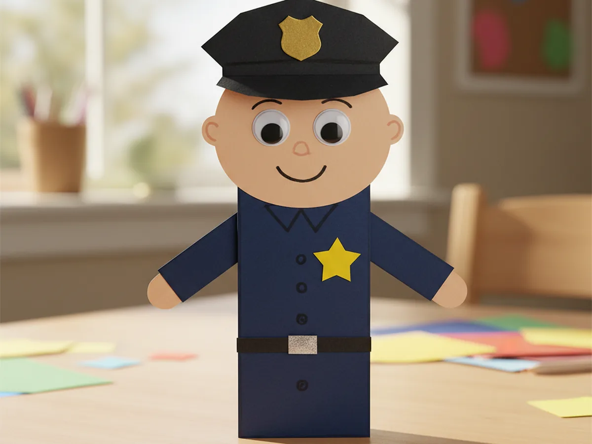
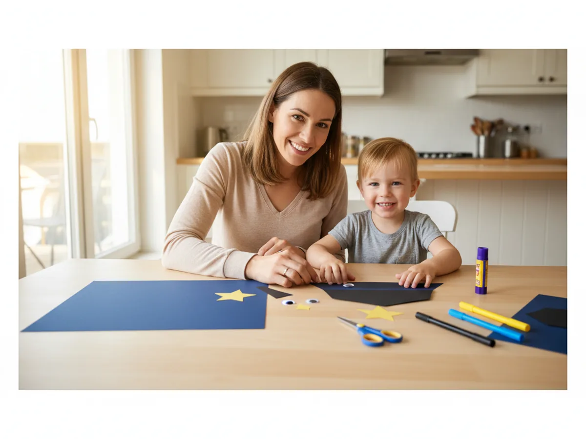
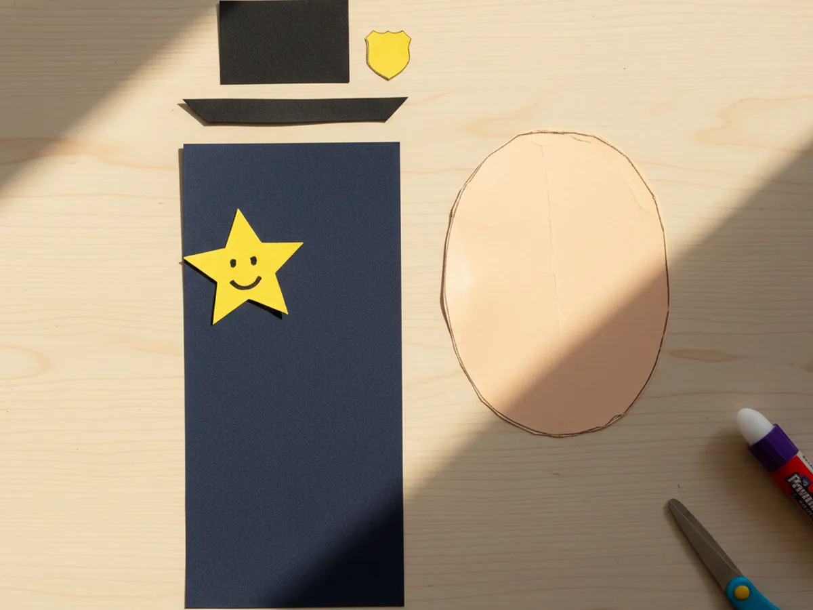
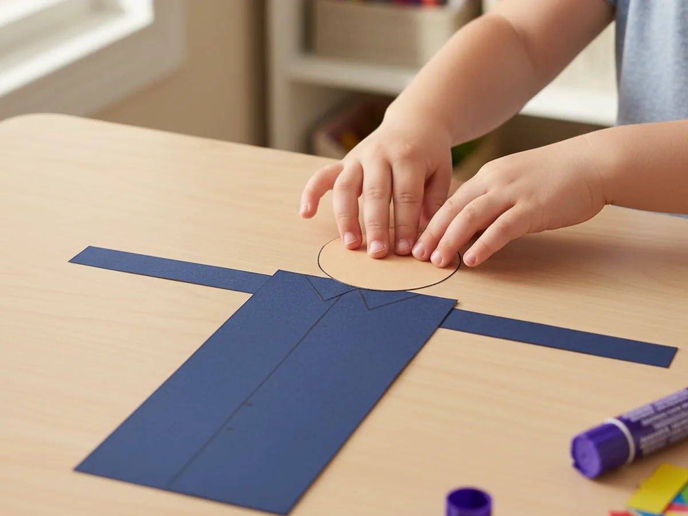
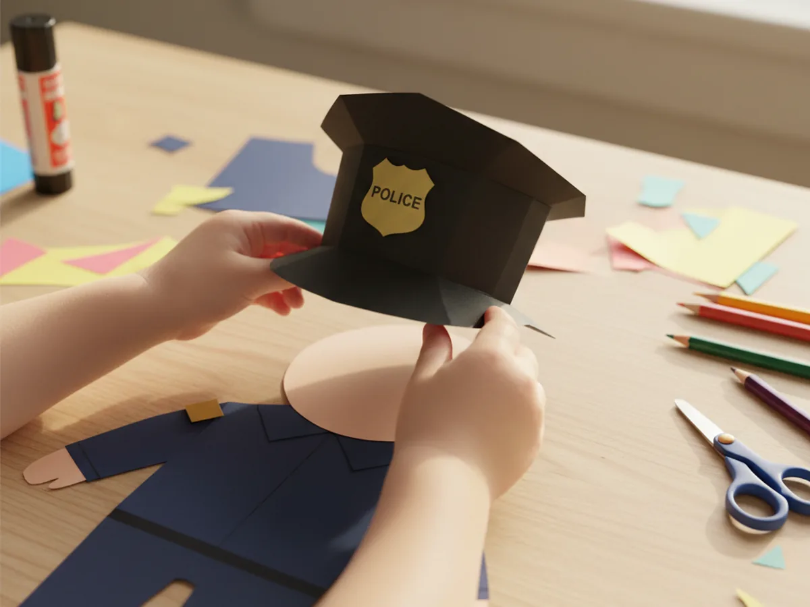
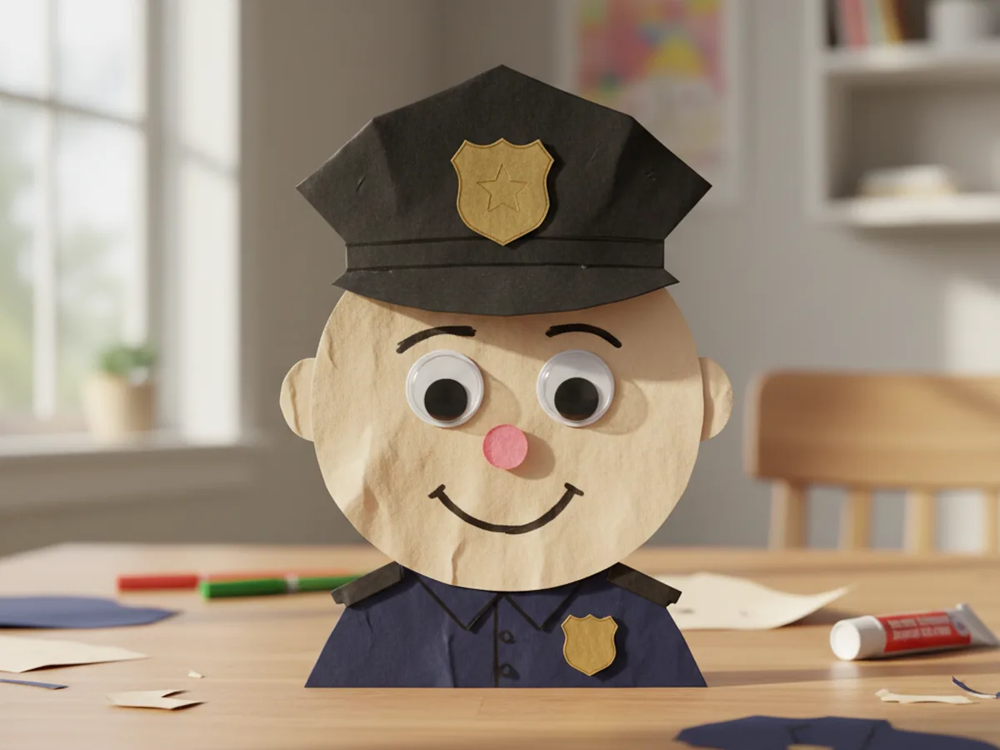
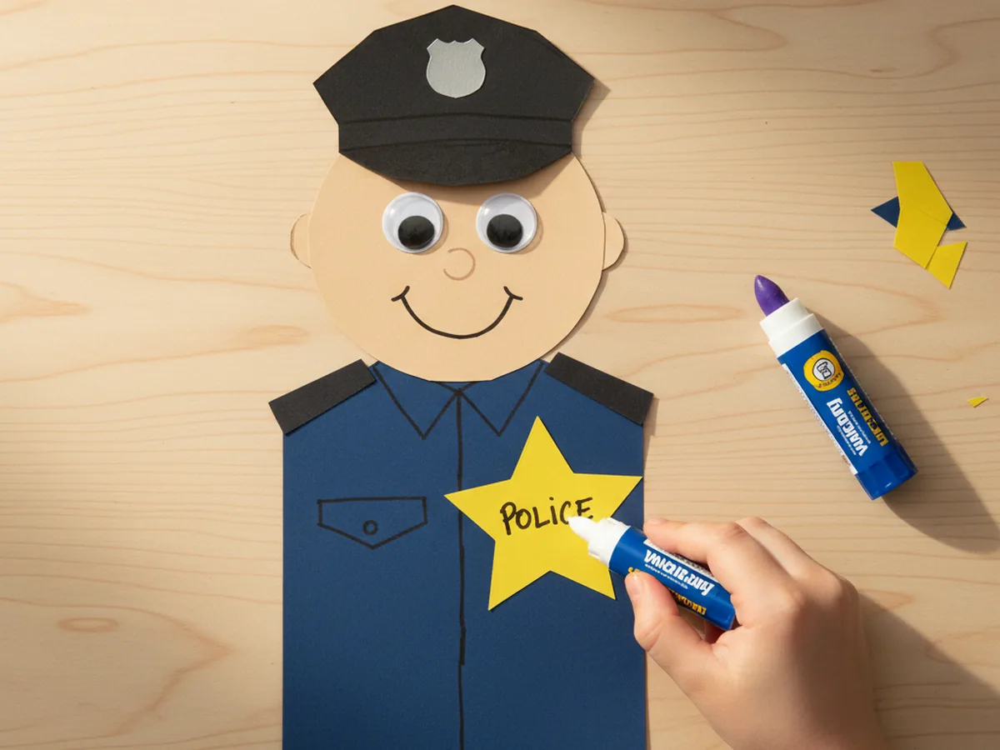
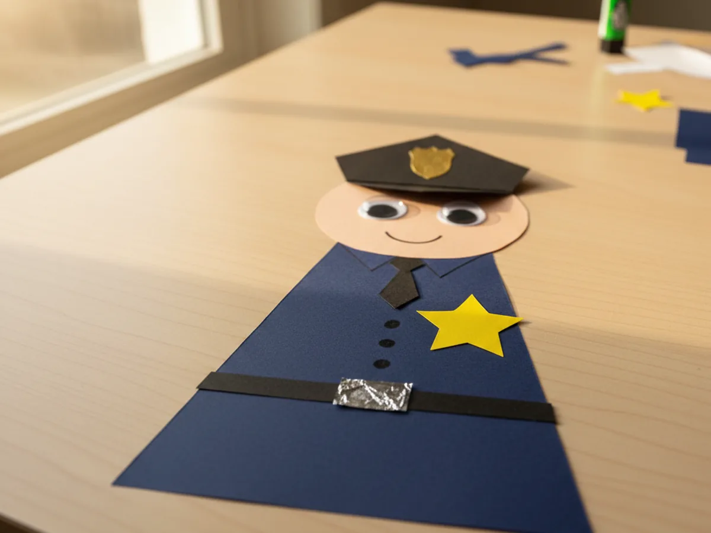
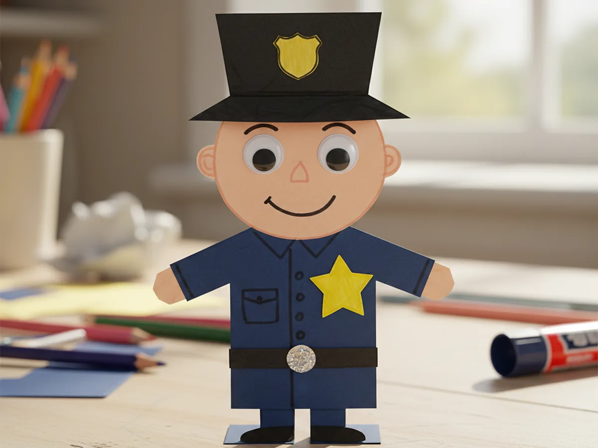

This little police paper craft is one of those easy paper projects that lights kids up the second they see the gold star badge come together. You cut a few shapes out of cardstock, add a friendly face, glue on a hat with a small badge, and finish with a shiny star on the chest. The whole thing takes about 45 minutes at the kitchen table, and at the end your child is holding a smiling little officer they made from start to finish. 👮
It is calm, low-mess, and beginner-friendly for a 4 year old with a bit of help. Older kids can build the whole police paper craft on their own, while toddlers can join in by sticking on the googly eyes and pressing the badge into place. Either way, the finished officer ends up with personality and usually a name, a story, and a whole afternoon of imaginative play.
Why Kids Love This Craft
Police officers fascinate kids. They show up in storybooks, in real-life community helpers lessons at preschool, and in almost every toy set kids own. The minute your child realizes they get to build their very own friendly officer from paper, the excitement is real. Add a gold star badge and a tall hat with a tiny shield on the front, and you have a craft that feels both important and playful at the same time.
This police paper craft for kids also gently builds real skills along the way. Cutting rectangles and stars from cardstock supports scissor practice. Gluing the small star, the badge on the hat, and the belt buckle helps with focus and fine motor control. Adding the googly eyes and drawing a friendly smile teaches children that small details bring a character to life. Even pressing the brim of the hat onto the head feels like a satisfying little construction step.
Best of all, every easy police paper craft looks different. Some kids want a tall thin officer, some want a chunky little square one, some give theirs three buttons on the chest or extra pockets. There is no wrong way to make a paper officer, and that freedom is exactly what makes children so proud of theirs. By the end, you will hear, "Look mommy, this is officer Sam and he keeps the dog safe." That kind of imaginative community helpers paper craft moment is what makes the project worth doing. 💛

What You'll Need
Here is everything you need to build this police paper craft at home, and most of it is probably already in your craft drawer.
- Astrobrights Cardstock, 65 lb Bright Assortment, sturdy enough for a uniform that holds its shape and stands up on its own
- Crayola Construction Paper, 240 ct, gives you the navy blue, black, yellow, and skin-tone colors you need for the officer
- Elmer's Disappearing Purple Glue Sticks, 4 pack, easy for little hands and dries clear so no white residue shows on the uniform
- Fiskars Blunt-Tip Kids Scissors, safe for ages 4 and up and just right for cutting cardstock rectangles and small stars
- Crayola Broad Line Markers, for drawing the friendly smile, eyebrows, and tiny nose on the face
- UPINS Self-Adhesive Googly Eyes, 1000 ct, peel-and-stick eyes that bring the officer to life instantly
- A pencil, for tracing simple shapes before cutting
- A ruler, optional for drawing straight edges on the uniform
Step-by-Step Instructions
Take it one calm step at a time and your child will have a smiling little officer in about 45 minutes. Let them help with every part, even if they just pick the colors or press the badge flat.
Step 1: Cut the Police Officer Shapes
Start with the basic shapes. From navy blue cardstock or construction paper, cut a tall rectangle about 4 inches wide by 6 inches tall for the uniform body. From skin-tone construction paper, cut an oval head about 3 inches by 3.5 inches. From black cardstock, cut a tall hat shape about 4 inches wide by 2 inches high with a thin brim strip about 4 inches by half an inch. From yellow or gold cardstock, cut a small five-point star for the chest badge. These shapes are the entire skeleton of your police paper craft, and they do not need to be perfect.

Step 2: Glue the Uniform Together
Now build the basic body. Place the navy blue uniform rectangle on the table with the long side standing up tall. Glue the skin-tone oval head onto the top of the rectangle so it slightly overlaps the blue. Then cut two small navy blue arm strips about 1 inch by 3 inches and glue one on each side of the uniform, pointing slightly downward. This gives your easy police paper craft its full body shape and gets your child excited to see the officer start to appear.

Step 3: Build the Police Hat
Now for the part that turns your little figure into a real officer. Glue the thin black brim strip across the top of the head, right above the eye area. Then glue the tall black hat crown on top of the brim so it sits snugly above. Cut a tiny gold rectangle or small shield shape and glue it onto the front of the hat as the hat badge. Your police paper craft officially has a uniform hat. 🌟

Step 4: Add the Face Details
Now for the moment that always makes kids gasp. Stick two large self-adhesive googly eyes onto the face just under the hat brim. Use a black marker to draw two small eyebrows above the eyes and a friendly curved smile underneath. Add a tiny pink or peach nose dot in the middle. The minute the eyes and smile are on, your police paper craft stops being paper and becomes a little character with personality, and your child will name it within seconds.

Step 5: Add the Gold Star Badge
This is the part every child gets excited about. Take the yellow or gold five-point star you cut earlier and glue it onto the upper left side of the uniform chest. Press it down firmly with the glue stick. Use a fine black marker to draw a small dot or write "POLICE" across the star if your child is old enough to enjoy that little detail. The badge is the unmistakable sign that this is a real police officer paper craft and not just any character.

Step 6: Add a Belt and Tie
Now add the finishing uniform details that make the police paper craft feel complete. Cut a thin black strip about 4 inches by half an inch and glue it across the waist of the uniform for the belt. Add a small silver or gold square in the middle of the belt as the buckle. If you like, cut a small black rectangle about 1 inch tall and glue it just under the head as a tie or radio. Two or three small black dots drawn down the middle of the uniform also look adorable as uniform buttons.

Step 7: Display the Finished Police Paper Craft
Now for the proud reveal. Carefully lift the finished officer and check that everything is glued down. If you want it to stand on its own, fold a small one-inch tab at the bottom of the uniform and bend it backward so the figure can balance on the table. Otherwise just tape it onto the fridge, hang it on the bedroom wall, or use it as a fun bookmark. Your child's police paper craft is officially ready for duty, and most kids will want to carry it around for the rest of the afternoon. ✨

Variations to Try
Community Helpers Set: Once your child has the hang of this police paper craft, try making a small set of paper community helpers using the same body shape. Swap the navy blue uniform for red and add a firefighter helmet, or use green for a park ranger. Line them up on a shelf for a sweet little display of helpers your child can introduce by name.
Paper Bag Police Puppet: Glue all the same pieces onto the front of a small brown paper lunch bag instead of flat cardstock. Place the face on the folded flap so the officer's mouth opens and closes when your child slips their hand inside. This turns the craft into a puppet that can star in a whole story.
Mini Magnet Officer: Make a small version about half the size and tape a craft magnet to the back. Once finished, your child can stick their tiny officer directly onto the fridge as a permanent display piece, joined later by a whole helper crew of paper friends.
Final Thoughts
A simple police paper craft is one of those calm, sweet projects that proves you do not need fancy supplies or hours of prep to spend a meaningful afternoon with your child. A few rectangles of cardstock, a gold star, and a friendly smile is enough to turn an ordinary kitchen table into a tiny police station. The real win is the moment your child holds up their officer, gives it a name, and tells you all about its very first day on the job. That is the kind of small magical moment that stays with both of you. Happy crafting, mama.
More Crafts You'll Love
If your family enjoyed building this little officer, here are two more sweet imaginative paper crafts to try next.